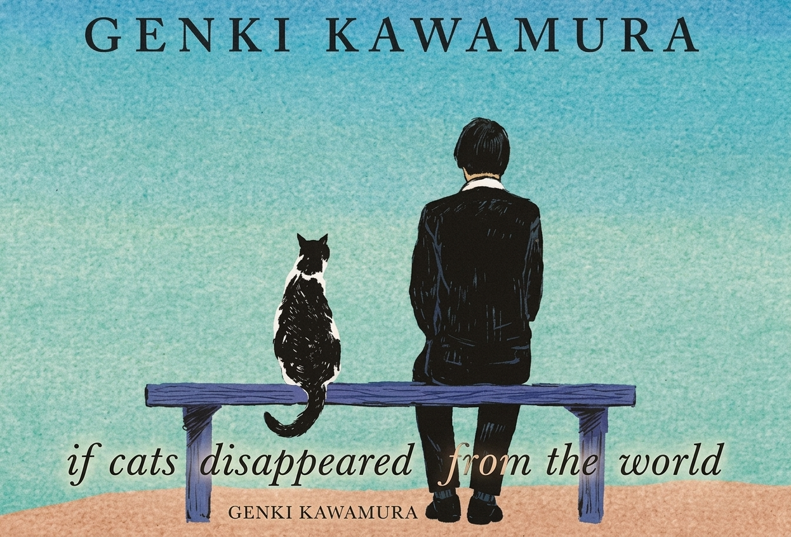

Once Upon a Page
Once Upon a Page

If Cats Disappeared from the World
A terminally ill postman makes a deal with the Devil: for every day of life he gets, one thing disappears from the world.
Monday: The Devil Makes His Appearance

I didn’t even have ten things I wanted to do before I die.
In a movie I saw once the heroine is about to die so makes a list of ten things she wants to do before she goes.
What a lot of crap.
OK. So maybe I shouldn’t be so harsh. But really, what even goes on a list like that? A load of rubbish probably.
“But how can you say that?” you might ask.
OK, look, I don’t know, but anyway I tried it and it was just embarrassing.
It all started seven days ago.
I had this cold I just couldn’t shake, but I kept going to work every day anyway, delivering the mail. I had a slight fever which wouldn’t shift, and the right side of my head ached. I was barely keeping it together with the help of some over-the-counter drugs (I hate going to the doctor). But after two weeks of this I caved and went— I just wasn’t getting better.
Then I found out it wasn’t a cold.
It was, in fact, a brain tumor. Grade 4.
Anyway, that’s what the doctor told me. He also told me I had only six months to live, tops. I’d be lucky if I made it another week. Then he explained my options—chemotherapy, anticancer drugs, palliative care… but I wasn’t listening.
When I was little, I used to go to swimming. I’d jump into the cold blue water with a splash, and then sink, slowly.
“Do a proper warm-up before you jump in!” It was my mother’s voice. But underwater it was muffled and hard to hear. For some reason this just popped into my head—this strange, noisy memory. Something I’d completely forgotten about until now.
Finally the appointment ended.
The doctor’s words were still hanging in the air as I dropped my bag on the floor and staggered out of the examining room. I ignored the doctor’s shouts, calling for me to stop, and ran out of the hospital screaming. I ran and ran, slamming into the people I passed, falling over, rolling on the ground and getting up again, throwing my limbs about wildly until I reached the foot of a bridge where I found I could no longer move, and groveling on my hands and knees, let out a sob.
…Well, no, that’s a lie. That’s not quite how it happened.
The fact is, people tend to be surprisingly calm when they hear news like this.
When I found out, the first thing that occurred to me was that I was only one stamp away from getting a free massage on my loyalty card, and I shouldn’t have bothered buying so much toilet paper and detergent. It was the little things which came to mind.
But finally, it hit me: a kind of bottomless sadness. I was only thirty. OK, so that would mean I’d have lived longer than Hendrix or Basquiat, but somehow it felt like I had a lot of unfinished business. There must be something, I don’t know what, but something on this planet that only I could do.
But I didn’t really dwell on any of this. Instead I wandered in a daze until I reached the station. A couple of young men were playing acoustic guitar and singing.
“This life will someday have to end, so until that final day arrives,
Do what you want to do, do it, do all you can,
That’s how you face tomorrow.”
Idiots. Now that’s what you call a complete lack of imagination. Go ahead—just go on and sing your lives away in front of this godawful station.
I was so mad I couldn’t take it. It was too much and I had no idea what to do. I took my time getting back to the flat. I clattered up the stairs and opened the flimsy door to the cramped little space which I called home. It was then that the complete hopelessness of it all caught up with me. The outlook was bad. I mean literally, I couldn’t see a thing—I collapsed right there on the doorstep.
When I woke up I was still lying by the door. God knows how long I’d been there for. I could make out a black and white ball with grey patches in front of me. Then the ball made a sound—“miaow”. Finally I realized it was the cat.
It has been me and him for four years now. He came closer and let out another “miaow”. I took this as a sign he was worried about me. But hey, I wasn’t dead yet, so I sat up. I still had a fever and my head was killing me: I really was sick.
Then suddenly someone’s chirping from across the room.
“So great to meet you!”
And there I was. I mean, it was me, standing there, looking at me. Or someone who looked just like me. The word “doppelgänger” sprang to mind… I read something about this sort of thing in a book ages ago. It’s another you who appears when you’re about to die. Had I finally gone crazy, or was my time already up? My head was starting to spin, but I managed to keep it together. I decided to tackle head on whatever it was standing before me.
“Er, so, who are you?”
“Who do you think?”
“Uhh, is it… the Angel of Death?”
“Close!”
“Close?”
“I’m the Devil.”
“The Devil?”
“Yes, the Devil!”
So that’s how, in a slightly surprising way, the Devil appeared in my life.
Have you ever seen the Devil? Well, I have, and the real Devil doesn’t have a scary red face or a pointy tail. And there’s definitely no pitchfork! The Devil looks just like you. So the real doppelgänger was the Devil!
It was a lot to take in, but what choice did I have? Plus he seemed like a nice guy. So I decided that I’d just have to go along with it.
Upon closer inspection I realized that although the Devil looked a lot like me, we couldn’t be more different when it came to our sense of style. I tend to dress in basic black and white. For instance, I’ll wear black slacks with a white shirt and black jumper. Boring yes, but that’s just who I am—the monotone guy. I remember ages ago my mother getting fed up— “There you go again buying the same kind of clothes as always…”, but I’d still find myself choosing the same thing whenever I went shopping.
The Devil, though, dressed, um, shall we say, unconventionally? Brightly colored Hawaiian shirts with palm trees or pictures of classic American cars, and he was always in shorts—like someone permanently on holiday. And of course, you mustn’t forget the sunglasses (probably Ray-Bans). He was dressed as if it were still summer despite the fact it was freezing out. Just as I was about to reach boiling point, the Devil spoke.
“So what are you going to do now?”
“Huh?”
“I mean, you haven’t got a lot of time left… you know, this life-expectancy thing and all that.”